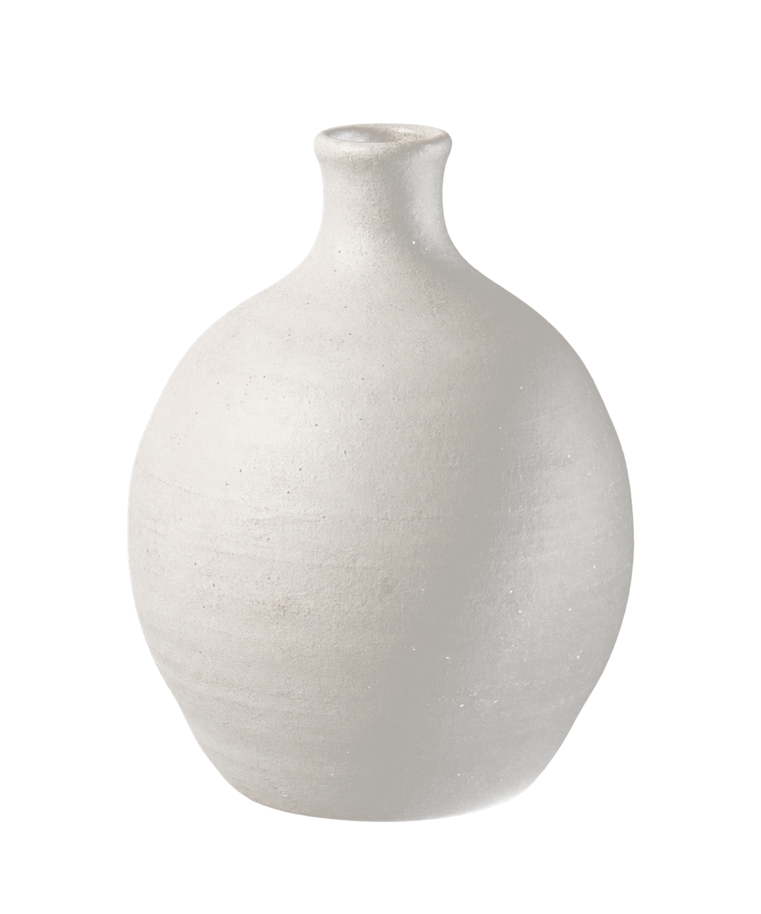
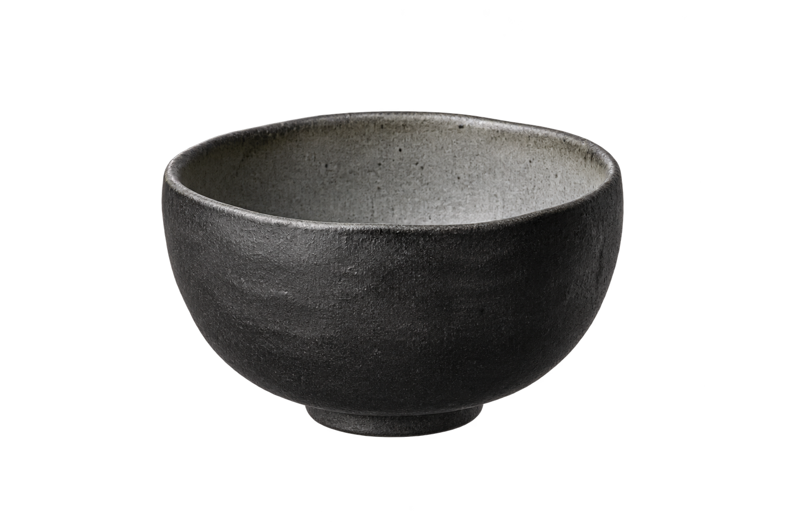
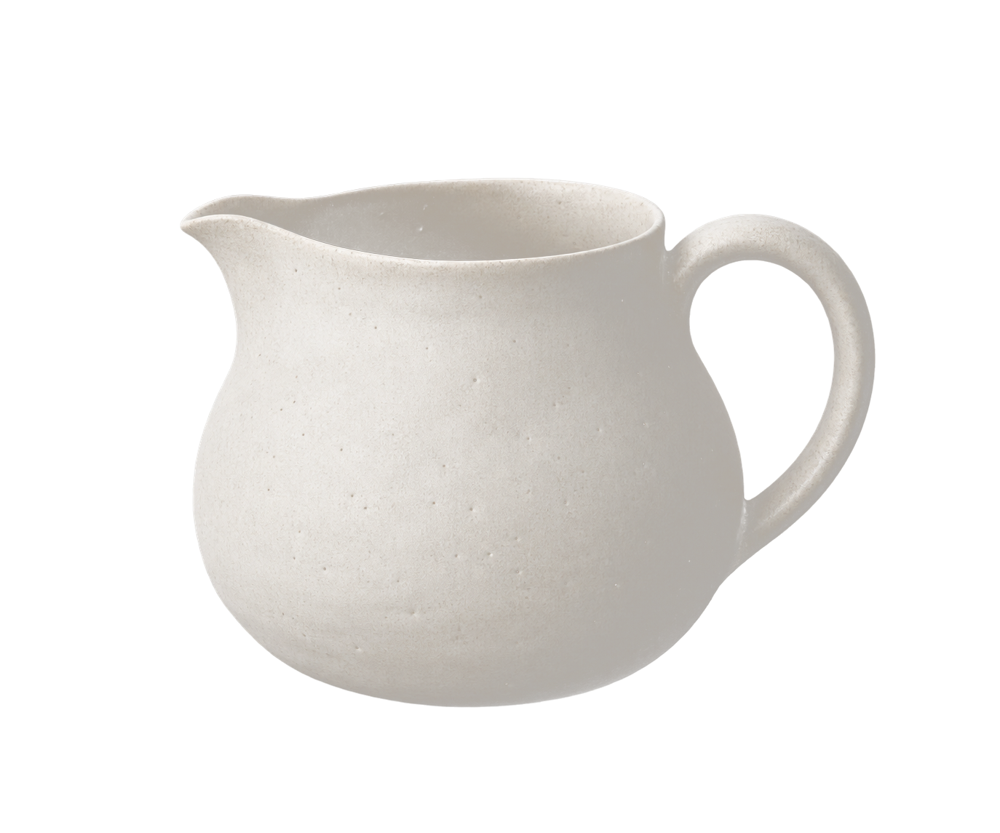

Brand Identity / Visual Design
2024
Tea × Liquor
HEYTEA
TWO RITUALS.
ONE NEW
DRINKING CULTURE.
A conceptual rebrand exploring the space between tea culture and contemporary social drinking through identity, packaging, campaign, and digital experience.

01 / Campaign Idea
TWO TRADITIONS.
A NEW PERSPECTIVE.
HEYTEA brings together the cultural depth of tea and the expressive spirit of social drinking, creating a contemporary experience built around ritual, connection, and enjoyment.
Rather than treating tradition as decoration, the campaign translates familiar forms, materials, and visual references into a cleaner and more flexible design language.
02 / The Opportunity
TRADITION DOESN’T
HAVE TO LOOK
TRADITIONAL.
The opportunity was to build an identity that could retain a sense of cultural depth without relying on an overly traditional visual language. The rebrand focuses on simplification and reinterpretation: preserving recognizable references to tea and drinking culture while expressing them through contemporary typography, restrained color, and flexible compositions.
Cultural Roots
Preserve recognizable references to tea, vessels, landscape, and ritual.
Contemporary Expression
Translate those references through a cleaner, more minimal visual language.
Flexible System
Create an identity capable of moving across packaging, campaign, social, and digital experiences.
03 / Cultural References
EVERYDAY OBJECTS.
TIMELESS FORMS.
The visual language begins with familiar objects surrounding tea and drinking culture: jars, pots, cups, bowls, bottles, and vessels.
Their value is not only functional. These objects represent ritual, gathering, sharing, and a slower, more intentional way of experiencing a drink.



04 / Visual Language
FROM FAMILIAR FORMS
TO A FLEXIBLE SYSTEM.
Rather than reproducing cultural objects literally, the visual language reduces familiar forms into a flexible collection of vessels, landscape elements, and monochromatic graphics.
Together, these elements create a recognizable visual world that can shift across campaign, packaging, print, and digital applications.
05 / Brand Character
REFINED. ROOTED.
PURE. RELAXED.
A restrained visual language communicates quality without relying on excessive decoration.
Familiar objects and landscape references give the identity a recognizable cultural foundation.
Monochromatic color and generous negative space communicate simplicity and clarity.
Organic forms and open compositions create a calmer and more approachable brand experience.
06 / Identity
A MARK BETWEEN
TWO RITUALS.
The symbol draws from the shared visual language of tea and drinking vessels, reducing familiar container forms into a simple and recognizable mark. Its compact silhouette allows the identity to move easily across packaging, campaign graphics, printed materials, and digital applications.
FORM
REDUCED TO
A RECOGNIZABLE
MARK.
07 / Typography
REFINEMENT
MEETS FUNCTION.
The typography system balances expressive brand character with functional clarity.
Didot introduces editorial refinement and a sense of ceremony across headlines and campaign moments.
An expressive accent supports selected campaign moments without replacing the core information system.
Inter supports body copy, product information, and interface content where clarity and legibility are the priority.
08 / Color
COLOR THROUGH
RESTRAINT.
The identity uses black, white, and tonal grays to reference the depth and layering of ink while allowing typography, imagery, and illustration to remain the primary visual elements.
09 / Graphic Language
A WORLD BUILT
FROM FAMILIAR FORMS.
The graphic system expands the identity through vessels, cups, bottles, landscape forms, and ink-inspired textures. Scale, cropping, and composition can shift across applications, allowing the system to remain recognizable without requiring every touchpoint to repeat the same layout.
10 / Campaign
ONE LANGUAGE.
FOUR EXPRESSIONS.
The poster series explores how typography, illustration, product imagery, and negative space can shift across different compositions while remaining part of the same visual system.


11 / Physical Experience
THE CAMPAIGN
BECOMES AN OBJECT.
Across packaging and physical touchpoints, the identity relies on bold scale, restrained typography, and monochromatic illustration to create recognition without visual excess.


12 / Content
BUILT TO
KEEP MOVING.
Social content extends the campaign through flexible compositions rather than a fixed template, allowing the identity to adapt while preserving its typography, imagery, and visual rhythm.

13 / Digital
THE SAME WORLD,
ON SCREEN.
The digital experience carries the same visual principles into a more functional environment. Typography, monochromatic imagery, and negative space support the brand without competing with usability.


14 / Campaign System
ONE IDEA.
MANY TOUCHPOINTS.
The final campaign brings identity, packaging, editorial design, social content, and digital experience into one connected visual world. Rather than treating the rebrand as a collection of individual assets, the system is designed to shift in scale, composition, and function while maintaining the same visual character.
15 / Reflection
CULTURE DOESN’T
NEED TO BE COPIED
TO BE RECOGNIZED.
This project pushed me to treat cultural references as design material rather than decoration. By reducing familiar objects and visual traditions into form, contrast, and composition, I was able to build a system that feels rooted in its references while remaining contemporary and flexible.
FROM RITUAL → TO EXPERIENCE.